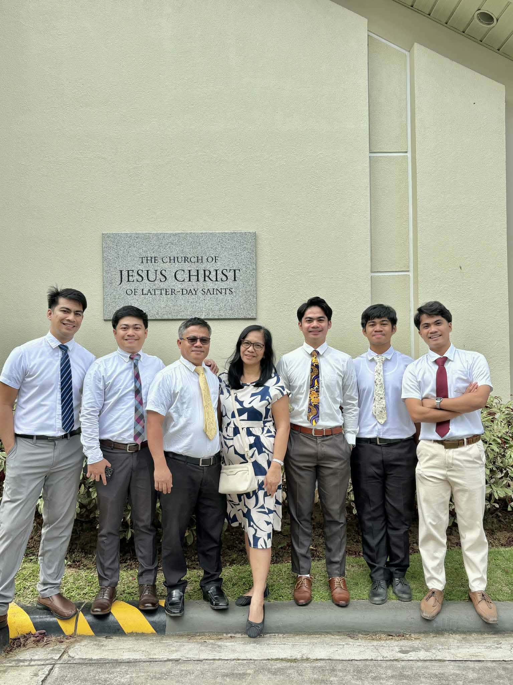
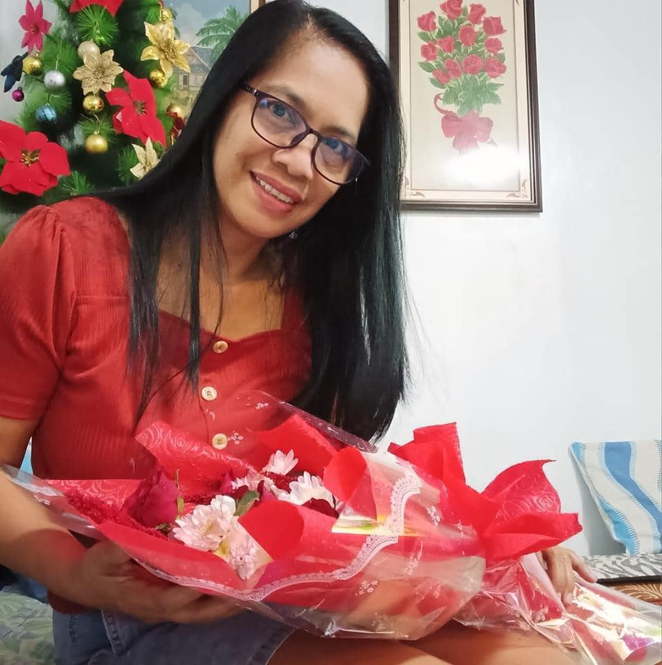
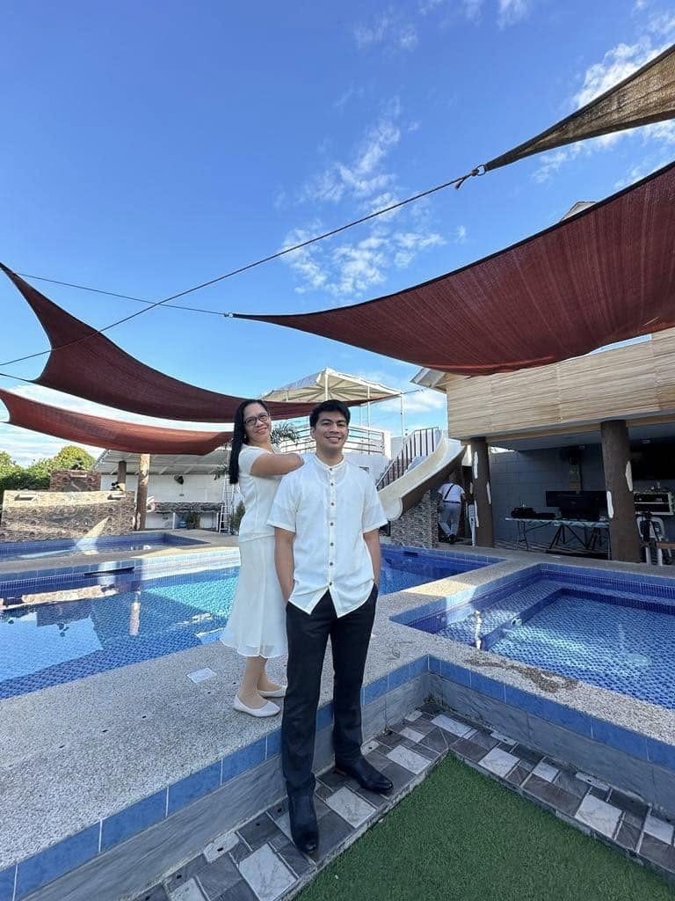
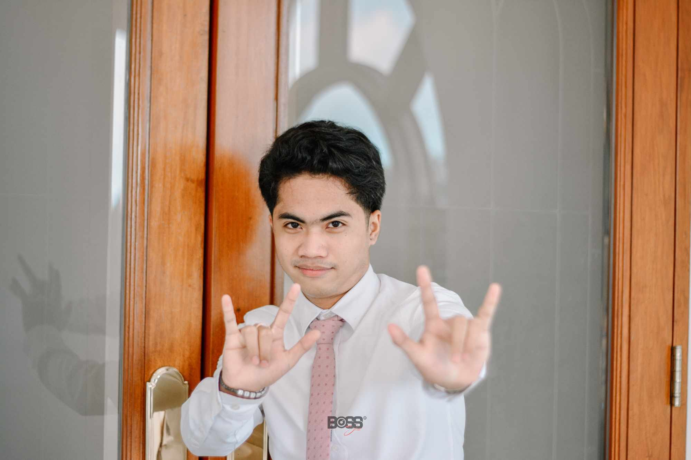
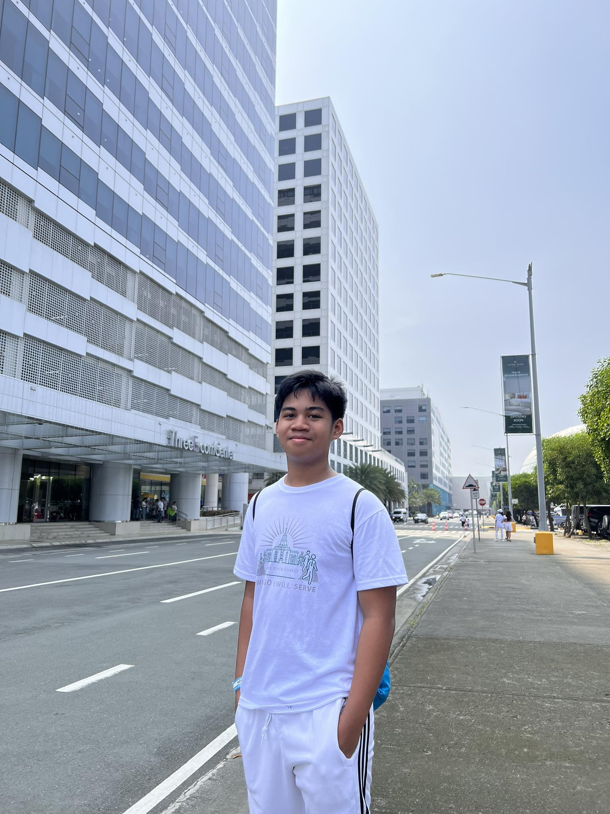

Reynante Goria
He is my Dad. He is a hardworking man who always puts his family first. fun facts about him is that he loves go to the gym even he is 49 years of age.

We are a big, fun-loving group that takes bonding to the next level. With five returned missionaries, so we’re basically experts at long-distance cheering and even better at big reunions. If you’re looking for high energy and even higher spirits, you’ve found the right family!
He is my Dad. He is a hardworking man who always puts his family first. fun facts about him is that he loves go to the gym even he is 49 years of age.

She is my Mom. She is a caring woman who always puts her family first. fun facts about her is that she loves to cook and her cooking is the best.
This is me! I am the oldest child in the family. I am handsome and kind.

He is the second child in the family. He is the tallest among the family and always makes everyone laugh.

He is the third child in the family. He is very creative and studios. fun facts about him is that he loves to play chess and trying hard to defeat all the difficult opponents.
He is the fourth child in the family. He is diligent in household chores. fun facts about him is that he loves to annoy our younger brother and he loves pets fish

He is the fifth child in the family. He is very playful and always brings joy to everyone around him. fun facts about him is that he loves drawing and playing online games.